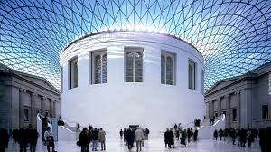
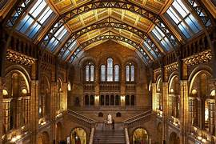
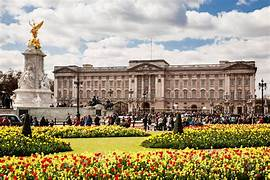

Destinasi Wisata di Inggris
Siapa yang tak kenal Inggris, negara yang terkenal dengan kerajaan serta sepak bolanya ini ternyata juga memiliki banyak sekali objek wisata yang ramai mengundang wisatawan asing untuk datang mengunjunginya. Sudah tidak dapat dipungkiri lagi kalau Inggris juga merupakan salah satu engara di dunia yang terkenal dengan berbagai macam tempat wisatanya, terutama London yang merupakan ibukotanya. Selama lebih dari 2000 tahun lamanya, London telah menyimpan berbagai macam hal yang menakjubkan dan menghibur bagi para wisatawan asing yang datang berkunjung. Apalagi kalau bukan karena berbagai macam tempat wisata yang memiliki daya tarik dan juga nilai sejarah yang tinggi.
1. British Museum

British Museum merupakan tempat wisata pertama yang dapat dikunjungi apabila Anda datang ke Inggris. British Museum merupakan museum tertua di dunia yang memiliki koleksi tidak kurang dari 6 juta koleksi, di mana koleksi tersebut mencakup 1,8 juta tahun peradaban. Contohnya ialah Mummified Cat (mumi kucing) yang berasal dari Abydos dan tercatat sejak 30 SM. Selain itu, di lantai dasar Anda juga dapat menjumpai Parthenon Sculptures yang merupakan dekorasi luar biasa abad ke-5 SM dari Parthenon yang dibuat pada masa pemerintahan Pericles. Sedemikian sehingga tak heran apabila tempat wisata yang satu ini menyedot banyak sekali wisatawan dari berbagai belahan dunia.
2. London Eye

London Eye merupakan tempat wisata kedua yang dapat dikunjungi apabila Anda datang ke Inggris. London Eye merupakan sebuah kincir angina raksasa terbesar kedua yang pernah dibangun di dunia. Kincir raksasa ini terletak di seberang Houses of Parliament, South Bank. Meskipun antrian untuk bisa menaiki wahana ini cukup panjang setiap harinya, namun Anda dijamin tidak akan menyesal apabila ingin mencoba menaikinya apabila datang ke London, Inggris. Apabila menaiki wahana ini Anda akan dimanjakan dengan pemandangan yang indah dan menakjubkan kota London serta Sungai Thames-nya yang juga sangat terkenal di London, Inggris. Wahana ini dibuka sejak tahun 2000 dan dikenal juga dengan sebutan Millennium Wheel atau Ferris Wheel. Wahana ini memiliki tinggi struktur 135 meter dan dilengkapi dengan 32 kapsul yang siap untuk mengangkut para wisatawan.
3. Natural History Museum

Natural History Museum merupakan tempat wisata ketiga yang dapat dikunjungi apabila Anda datang ke Inggris. Museum ini terkenal dengan koleksinya yang sangat besar dan beragam. Terdapat sekitar 70 juta specimen yang ditampilkan, yang mana koleksi-koleksi tersebut berasal dari barang-barang yang dibawa oleh Charles Darwin dan ahli botani Kapten Cook, Joseph Bank. Selain itu, ada juga berbagai aktraksi khusus yang disiapkan untuk anak-anak, seperti koleksi dinosaurus.
4. Buckingham Palace

Buckingham Palace merupakan tempat wisata keempat yang dapat dikunjungi apabila Anda datang ke Inggris. Tempat wisata yang satu ini merupakan kediaman ratu yang sangat terkenal di Inggris. Yang mana, Anda dapat menyaksikan pergantian penjaga istana dengan seragam merah dan topi tingginya yang terbuat dari bulu beruang pada pukul 11.00 setiap hari atau pukul 10.00 pada hari minggu dan hari-hari musim dingin.